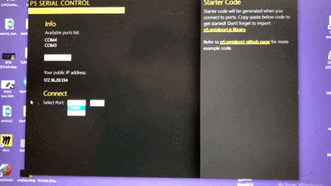
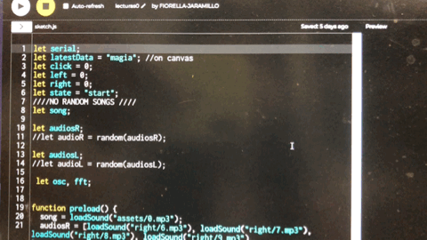
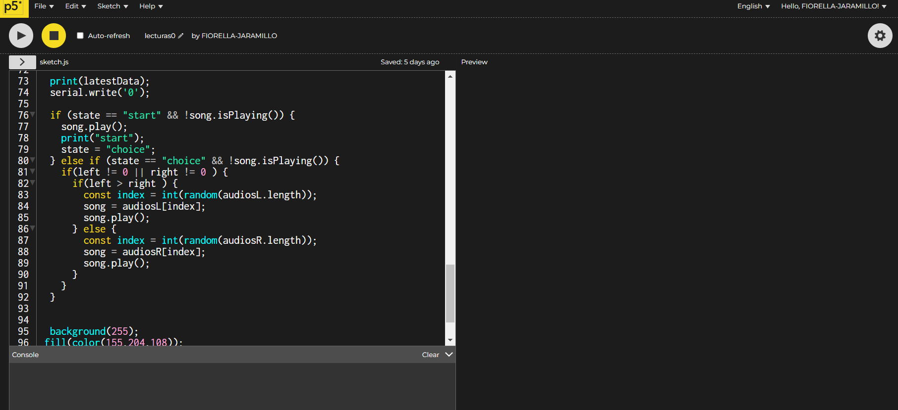

GENERATING AN INTERFACE USING P5
CONNECTING ARDUINO WITH P5
USING P5.SERIALCONTROL
The connection is through the serial port COM3. And it connects just one by time, so, if you are using the serial port in Arduino it is not going to work in P5js and vice versa.
HAVING THE DATA IN P5
AND PICK AND EXAMPLE TO BE VISUALIZED
Basically, I want to visualize the difference in movement between the two sensors. In this case, accekerator / gyroscope MPU5060 sensor.
 VISUALS

In addition, I have audio output.